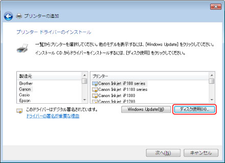
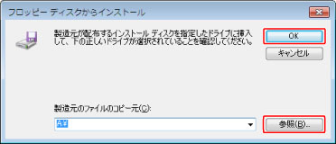
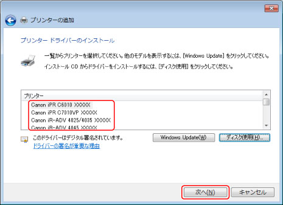

Windowsコントロールパネルの［デバイスとプリンター］（または［プリンタとFAX］/[プリンタ]）フォルダーからinfファイルを指定して、ドライバーをインストールします。
|
重要
|
|
コンピューターを起動した際に、必ずAdministratorsのメンバーとしてログオンしてください。
|
1
［

］（スタート）メニューから［デバイスとプリンター］を選択
Windows 8/8.1/Server 2012/Server 2012 R2：デスクトップで画面右側のチャームを表示したあと、［設定］→［コントロールパネル］→［デバイスとプリンター］をクリックまたはタップ
Windows Vista：［
］（スタート）－［コントロールパネル］－［プリンタ］を選択
Windows XP Professional/Server 2003：［スタート］－［プリンタとFAX］を選択
Windows XP Home Edition：［スタート］－［コントロールパネル］－［プリンタとその他のハードウェア］－［プリンタとFAX］を選択
2
［プリンターの追加］（または[プリンタのインストール]）をクリック→表示されたプリンターの追加ウィザードの指示に従って進む
3
［ローカルプリンターを追加します］（または［ローカル プリンターまたはネットワーク プリンターを手動設定で追加する])をクリック
4
［新しいポートの作成］を選択 → ［ポートの種類］から［Standard TCP/IP Port］を選択→ ［次へ］をクリック
5
［ホスト名またはIPアドレス］にデバイスのIPアドレスを入力 → 画面の指示に従って進む
6
［完了］をクリック
ポートの追加が完了しました。続いて、ドライバーをインストールします。
|
メモ
|
|
Windows Vista/Server 2008/7/8/8.1/Server 2012/Server 2012 R2 で、上記の手順によりデバイスを検出できなかった場合は、不明なデバイスとして認識されていることがあります。その場合は、以下の手順に従ってください。
［コントロールパネル］－［デバイス マネージャー］（または[デバイス マネージャ]）を表示
［ほかのデバイス］－［不明なデバイス］を選択 → ［操作］メニュー－［ドライバソフトウェアの更新］（または[ドライバーの更新]）をクリック
ドライバーソフトウェアの更新ウィザードが表示されます。
［コンピュータを参照してドライバソフトウェアを検索します］をクリック → 手順 8 |
7
［ディスク使用］をクリック

［参照］をクリック → ドライバーが保存されているフォルダーを選択 → ［OK］をクリック

ホームページ（http://canon.jp/）から最新版ドライバーをダウンロードした場合：
32bit版：Driver
64bit版：x64\Driver
(※) お使いのドライバーによっては上記のパスと異なる場合があります。
付属のCD-ROMを使用する場合：
LIPSV
LIPSLX： \LIPSV\LIPSLX\32BIT\Driver
\LIPSV\LIPSLX\x64\Driver
LIPS4： \LIPSV\LIPS4\32BIT\Driver
\LIPSV\LIPS4\x64\Driver
LIPSLX
\LIPSLX\32BIT\Driver
\LIPSLX\x64\Driver
CARPS2
\CARPS2\32BIT\Driver
\CARPS2\x64\Driver
PS
\PS\32BIT\Driver
\PS\x64\Driver
9
［プリンター］からお使いのデバイスを選択 → ［次へ］をクリック

10
画面の指示に従ってドライバーをインストール → ［終了］をクリック
Windowsコントロールパネルの［デバイスとプリンター］（または［プリンタとFAX］/［プリンタ］）に、インストールしたデバイスが表示されます。
以上でインストールの作業が終了しました。